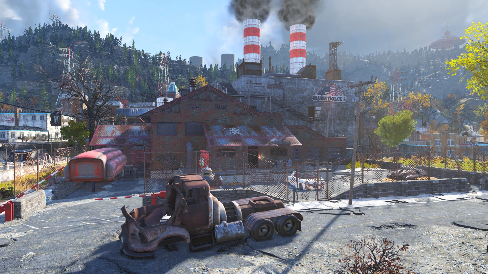
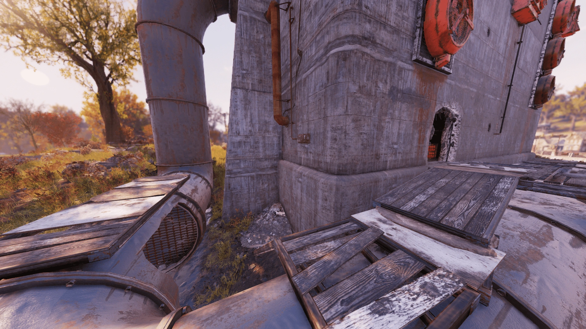
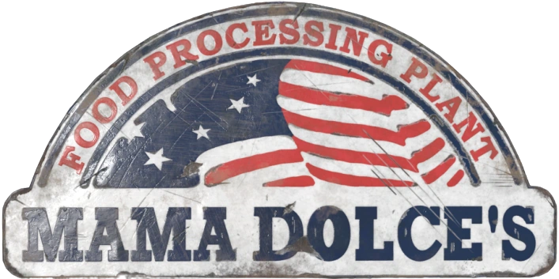

Mama Dolce's Food Processing
ママ・ドルスの食品加工場
── 工場PAシステム
ママ・ドルスの食品加工場は、アパラチアのモーガンタウン内に位置する工場です。
背景
表向きは「全米最高の食品加工プラントチェーン」を名乗るママ・ドルス社ですが、その実態は中国の情報機関によるスパイ・研究活動の拠点でした。
「完全なるアメリカ企業」を自称し、偉大なるアメリカ社会の価値観と伝統を守ると謳いながら、モーガンタウンの施設の地下には藤仁屋（ふじにや）情報基地が隠されていました。
この基地はオペレーション・トリニタイトの一環として設立されました。ウェストバージニアにあるとされるアメリカの秘密工場都市への潜入・破壊が目的でしたが、当初の目標は達成できず、施設は情報収集、ステルス研究、さらにはロボット工学へと活動を移しました。
カモフラージュはほぼ完璧でしたが、シュガー・グローヴのアナリストが同社による海外への送金を偶然発見。ワシントンD.C.のアナリストの協力で、ペーパーカンパニーを経由した資金の流れを中国まで追跡しました。完全監視作戦の要請が2077年8月9日に提出されましたが、大戦前に完了することはありませんでした。
大戦後
大戦後、ここに駐留していた中国の工作員たちは団結して持ちこたえようとしました。工場はリベレイターの発射ベイ（煙突に偽装）を中心に建てられており、入口はアクセスパイプの中に隠されていて、自動防衛システムも備わっていました。
しかし、エンクレイヴのエージェント・グレイの洞察力には敵わず、工作員たちはエンクレイヴによって排除されました。
エンクレイヴは工場を自身の目的のために利用しようとし、最初はサバイバリストを装って食品加工機の稼働を試みましたが、絶え間ない停電と機械の故障で断念。
次に周辺住民を脅して追い払う作戦に切り替え、地元の生存者を殺害し、ステルスボーイを使った「見えない幽霊」に殺されたように見せかけました。この作戦は成功し、やがて人々は川を渡って工場に近づくことさえ怖がるようになりました。
それでも結局、ステルス研究やリベレイターの設計図という戦利品があるにもかかわらず、絶え間ない停電と壁から文字通り湧いてくるロボットの攻撃のため、施設の利用は不可能でした。司令官は任務全体の撤収を推奨し、特にトイレ中にリベレイターに襲われた後は、工場を朽ちるに任せることを提案しました。
エンクレイヴが撤退した数年後、今度はレスポンダーがこの場所に目をつけました。
サンジェイ・クマールの偵察により、工場で生の食材を食用に加工できることが判明。機械の復旧と自動化にも成功しました。
しかし、地下施設から次々と湧いてくるプロテクトロンとリベレイターの攻撃のため、常駐は不可能でした。レスポンダーは、機械が冷えて使えるようになるたびに、断続的に施設に入って機械を起動・修理するという運用に落ち着きました。
レイアウト

ママ・ドルスの食品加工場は、モーガンタウン郊外の川沿いに位置します。
工場周辺のパイプは建物の地下にある藤仁屋情報基地へ通じており、上階のオフィスにあるママ・ドルス・マネージャーIDカードでアクセスできます。
工場は2階建てです。1階にはメインの工場エリアとマネージャー・スミスのオフィスがあり、オフィスにはロックされたターミナル（ハッカー0）と小部屋があります。
工場フロアでは、食品加工制御ターミナルがフードホッパーの対面に設置されており、食材を投入して美味しい缶詰シチューを作ることができます。
工場フロアの角にはロックされたセキュリティゲート（ピックロック0）の向こうに物資があります。荷降ろしドックにはロックされたトラック（ピックロック1）があり、中には兵士の骸骨と弾薬が入っています。
工場の南にはいくつかの小屋があり、丘を下った大きな小屋には武器作業台とパワーアーマーステーションがありますが、地雷やグレネードブーケで重度にトラップされています。
この小屋の上階にはスナイパーの巣があり、工場を一望できます。兵士の骸骨、ハンティングライフル、ロックされた弾薬箱（ピックロック0）が見つかります。
主な戦利品
- 現地報告書: ママ・ドルスの食品加工場 ── ホロテープ。食品加工制御ターミナルのデスク上（Final Departureクエスト中のみ）
- ママ・ドルス・マネージャーIDカード ── 工場上階のテーブル上
- パワーアーマーシャシー（T-シリーズ装甲パーツ付き）── 南西の罠だらけの倉庫内
- フュージョン・コア ── 工場南西の小さな倉庫のフュージョンジェネレーター内
- アーマーMODプラン/武器MODプラン（ランダム）── 3階マネージャーオフィスのファイルキャビネット内
- マガジン（ランダム）── 入口右の部屋、ロックされたターミナル横のデスク上
関連クエスト
- Feed the People ── 工場で繰り返し発生するイベント
- I Am Become Death ── 核ミサイル発射準備に関わるクエスト
発見できるホロテープ
デイブ・ストラウス: しーっ！ そんな大きな声出さないで、ミスター・サンジェイ！ 近くで赤い星のついた小さなロボットがうろうろしてるのが聞こえる……
サンジェイ: ロボットが心配なら行って対処してくれ。君は僕のセキュリティ護衛だろう？
……話を戻すと、偵察はこれで終了です。ここで見つけたものは非常に有望です。これらの機械を稼働させられる可能性は十分にあります。
デイブ: そもそもこのロボットはどこから来てるんだ？ ここで何してるんだ？ もう出た方がいいんじゃ……
サンジェイ: しっかりしろ！ まったく、今まで会った中で一番臆病なセキュリティ・ボランティアだよ。
どこまで話したっけ。ああ。機械チームを連れて戻り、この施設を完全稼働状態に復旧する可能性を調査することを推奨します。以上、報告終わり。
（近くで戦闘の叫び声。ストラウスには不利な展開。ポンプショットガンのコッキング音が響く）
ターミナルエントリ
食品加工制御ターミナル
この食品加工機に時間を費やすのはお勧めしません。私は機械工学の修士号を持っていますが、この機械を数分以上稼働させることができませんでした。オーバーヒートしてシャットダウンしてしまうのです。
もしここを稼働させることに成功したら、おそらく1マイル四方のすべてのミュータントとモンスターを起こすことになるでしょう。覚悟しておいてください。
── サンジェイ
マネージャー・スミスのターミナル
全米最高の食品加工プラントの最新の家族として、皆さんを歓迎します。以下の簡単なルールに従ってください。
1) ここママ・ドルスでは「完全なるアメリカ企業」を標榜しています。偉大なるアメリカ社会の価値観と伝統をあらゆる代償を払ってでも守ります。
2) 生産性は成功と個人の富への鍵です。このアメリカ資本主義社会では、会社の繁栄のために残業代なしで長時間働きます。会社の成功はあなたと家族の偉大な個人的富を意味します！
3) 厳格な階層組織があります。自分の持ち場を守り、上司の判断に疑問を持たないことを強くお勧めします。
4) 最も重要なこと：施設外部の機器を検査・修理しようとしないでください。法的責任を最小限にするため、外部機器の検査は資格を持った修理技術者のみに許可されています。このルールに違反した場合は即時解雇です。
── 工場長 ジョン・スミス
製品: 新しいスイート＆サワー・ストロガノフ。従来のストロガノフに100%増しの甘さを加えた製品。
結果: サンプルグループは製品の風味と食感に不満。24時間以内に多くの被験者が体調不良に。78%のテスターが「もっと甘くする必要性」に疑問を呈した。
推奨: 消費者の受容性が克服不可能な障壁となるかどうか、ハイレベルのコンセプトをさらに分析する必要がある。
HR マネージャー メアリー・ベイカー
ママ・ドルス全正社員の皆様へ：
工場長のジョン・スミスと私から、最新の新入社員グループをママ・ドルスの家族に歓迎いたします。全員がモーガンタウンの食品加工場のチームに加わります。見かけたらアパラチアの大歓迎をお願いします！
リンカーン・ジョーンズ ── 製造衛生技術者
ジャック・ホワイト ── 上級メンテナンス技術者
ジョン・ジョンソン ── 正規セキュリティオフィサー
ウィル・ハリス ── 加工機オペレーター（夜勤）
舞台裏
この場所にはFeed the Peopleイベントに連動した「ママ・ドルス工場アナウンス」を放送するPAシステムが設定されていますが、これらのアナウンスがゲーム内で再生されることは確認されておらず、カットコンテンツのようです。音声はAdam Croasdellによるものです。
ギャラリー


Fallout 76で最も重層的なストーリーを持つ場所の一つ。
表向きは「全米一のアメリカ企業」を自称する食品加工場ですが、地下には中国人民解放軍のスパイ基地。
大戦後、中国の工作員→エンクレイヴ→レスポンダーと所有者が移り変わり、それぞれが施設を活用しようとして、それぞれの理由で失敗しているのが面白い。
エンクレイヴの司令官がトイレ中にリベレイターに襲われて撤退を決めたエピソードは、Falloutらしいブラックユーモアの真骨頂です。
新入社員オリエンテーションの文面がまた秀逸。「残業代なしで長時間働くことがアメリカンドリームだ」と書きながら、外部設備の検査を禁じる。
まさに煙突に偽装したリベレイター発射ベイを隠すための措置。細部まで作り込まれた設定に脱帽です。
Feed the Peopleイベントで缶詰シチューを作るときは、この壮大な裏ストーリーを思い出してみてください。
This article was created by translating and editing Mama Dolce's Food Processing from Nukapedia: The Fallout Wiki.
Licensed under the Creative Commons Attribution-Share Alike License (CC BY-SA 3.0).
コミュニティ維持のため、寄付を受け付けております。
> COMMENTS